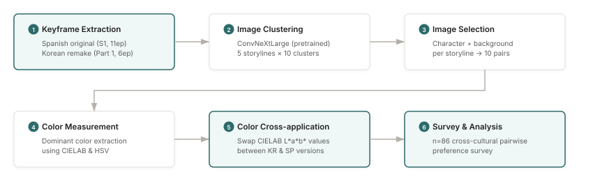

Drama Color Pattern Analysis
Analysing how Korean drama color grading affects viewer preferences through a cross-cultural comparison of Money Heist and its Korean remake.
research question
Color grading is a defining visual element of Korean dramas, yet previous research had two blind spots: studies either compared color differences between dramas without connecting them to viewer preferences, or measured preferences using artificially manipulated colors detached from real content.
This study bridges both approaches. By cross-applying the actual color properties from the Spanish original Money Heist (La Casa de Papel) and its Korean remake Money Heist: Joint Economic Area, we tested whether viewers prefer Korean color grading, and whether that preference stems from the colors themselves or from personal attributes like nationality.
methodology
The core challenge was creating a fair comparison: how do you isolate the effect of color grading from everything else in a scene? We designed a six-stage pipeline that extracts, measures and cross-applies color properties between the two versions of the same drama.
Keyframe extraction
Extracted keyframes from the Spanish original (season 1, 11 episodes) and Korean remake (part 1, 6 episodes). Removed duplicate compositions via image vector comparison to retain only unique scenes.
Image clustering
Used ConvNeXtLarge (ImageNet-pretrained) to cluster frames by visual similarity across 5 aligned storylines, producing 10 clusters each. This groups scenes by visual features rather than captions or metadata.
Image selection
Selected 1 character scene and 1 background scene per storyline. After the color swap in stage 5 these become 10 pairs (20 images): each pair is an original image and its color-swapped version. Excluded violent or shooting scenes for ethical compliance. Character and background images were separated because prior research shows color functions differently for each.
Color measurement
Extracted dominant colors from each image using CIELAB and HSV color spaces, capturing both perceptual color differences and saturation/brightness characteristics.
Color cross-application
Applied CIELAB L*a*b* values from each drama's color profile onto the other version's images. This means the same scene appears with both Korean and Spanish color grading, isolating color as the only variable.
Survey & analysis
Surveyed 86 participants (valid responses, one undergraduate class) on pairwise color preferences, controlling for OTT subscriptions, prior viewing of both versions, and nationality.


Design rationale: unlike previous studies that artificially shifted RGB values, we cross-applied actual color measurements from each drama using CIELAB coordinates. This preserves the authentic color palette that viewers experience, and ConvNeXtLarge clustering ensures visually comparable image pairs.
Methods & tools
- ConvNeXtLarge
- CIELAB
- HSV analysis
- K-means clustering
- Logistic regression
- User survey (n=86)
key findings
- 01
Korean color grading preferred: 52.5% vs 39.7%
Across the full sample, images with Korean drama colors were preferred at 52.5% versus 39.7% for Spanish original colors (t-test, p = 0.046). This held regardless of whether the source image came from the Korean or Spanish version: color grading, not content familiarity, drove preference.
- 02
Color properties, not personal taste
Logit analysis showed that personal attributes (nationality, number of OTT subscriptions, whether participants had watched either version) did not consistently predict color preference. The preference was driven by the color properties of the images themselves.
- 03
Saturation-based harmony is the key differentiator
Korean drama colors are characterised not by high contrast between light and dark, but by saturation-based harmony: colors with similar chroma levels placed together. This is consistent with earlier Korean–Japanese drama comparisons; a pilot of one drama cannot generalise further.
reflection & what's next
- Cross-cultural consistency, within limits. The same saturation-based pattern appeared in Korean–Japanese comparisons by other researchers. Our Korean–Spanish result is consistent with earlier Korean–Japanese drama comparisons; a pilot of one drama cannot generalise further.
- Pilot scope has clear limits. With 10 pairs (20 images) from a single drama and 86 valid responses from one undergraduate class, expanding to more titles, diverse demographics, and character-vs-background analysis would strengthen the conclusions. next step, planned
- Emotion is the missing layer. This study measured preference but not emotional response. Future work should integrate color psychology frameworks to understand why saturation harmony feels more engaging, bridging the gap between visual measurement and user experience. future work, planned
links
Yuna Sim, Hoyoung Yoon. "A Preference Analysis of Color: A Pilot Study Comparing the Drama Money Heist Original and Remake Versions." Journal of the Korean Data Analysis Society, Feb 2025. doi.org/10.37727/jkdas.2025.27.1.315